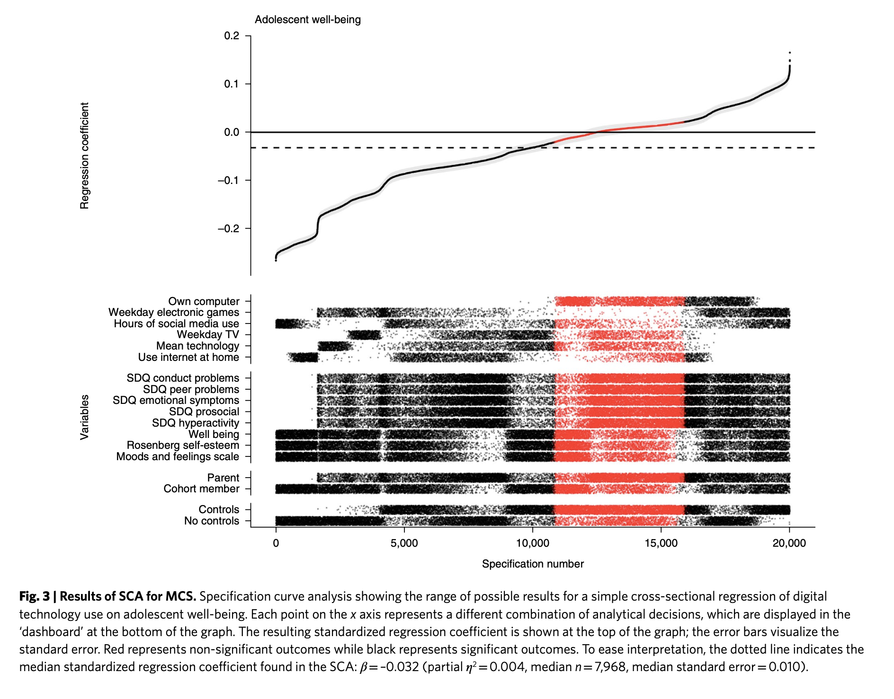
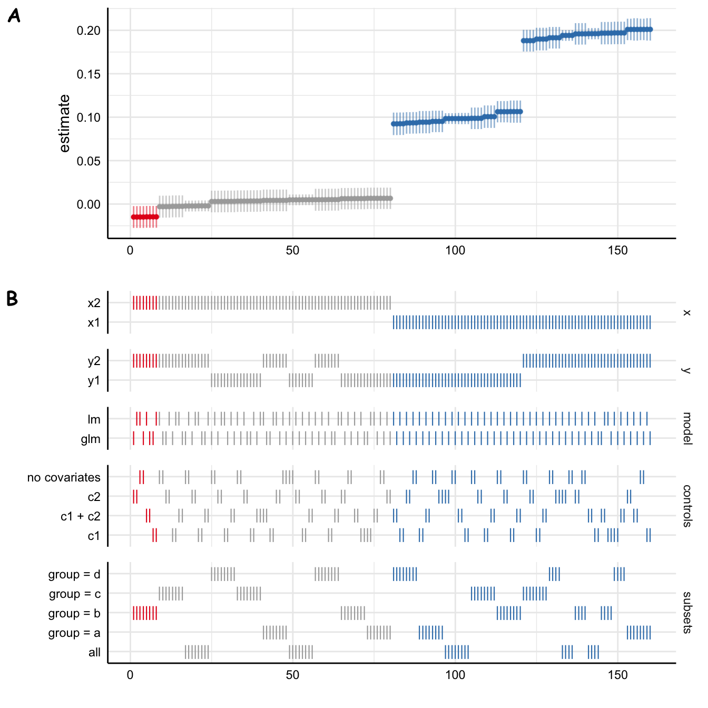
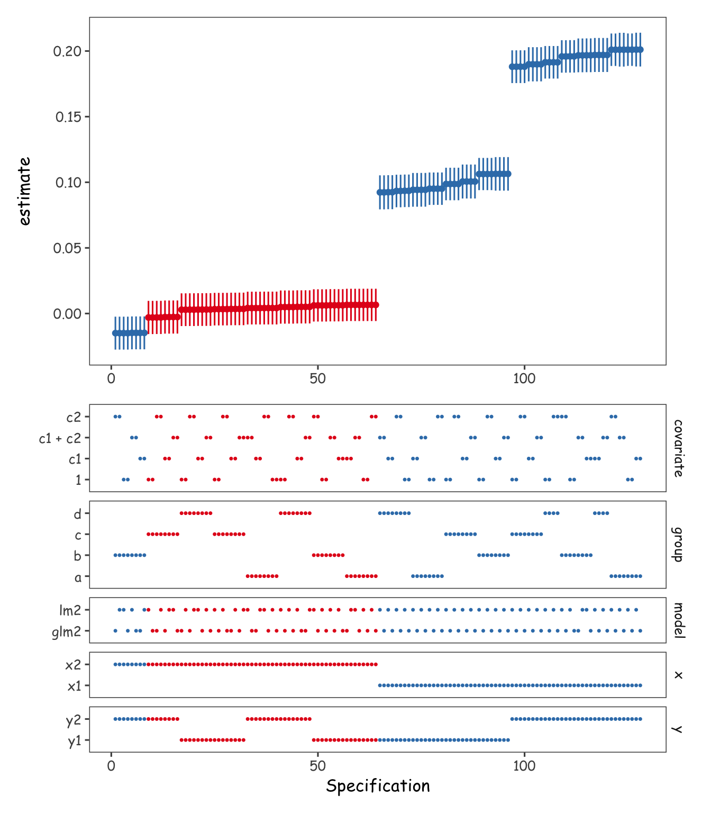

![]()

Introduction
The results of statistical analyses often depend on analysts’ (sometimes arbitrary) decisions, such as which covariates to model or what subsets of data to analyse. Multiverse, or specification curve, analysis is a method whereby the analysts don’t only conduct and report the results from one model, but instead conduct all the relevant and plausible analyses and report all the results (Simonsohn, Simmons, and Nelson 2020; Steegen et al. 2016).
For example, Orben and Przybylski (2019) showed, through analyzing the same datasets in thousands of different ways, that conclusions regarding the association between the psychological well-being of adolescents and their digital technology use critically depend on (mostly) arbitrary decisions in how and which data are analysed (Figure 1).
This blog entry is about the technical aspects of conducting multiverse analyses in R. Specifically, I want to find out easy and flexible methods of specifying and conducting multiverse analyses in parallel. I have briefly examined the landscape of R packages that facilitate multiverse analyses, and found that none suited my needs perfectly. In this entry, I therefore try to outline a general and flexible tidyverse-centric (Wickham et al. 2019) multiverse analysis pipeline. I eschew using external packages to maximize flexibility and speed (parallel processing).
Currently, I am aware of three R packages for conducting multiverse analyses. The multiverse package (Sarma et al. 2021) provides extensive functionality for conducting and reporting multiverse analyses, including a “domain specific language” for analyses and reporting. However, while powerful, the package seems somewhat complicated (for the use cases that I have in mind). Frankly, after briefly reviewing the documentation, I don’t know how to use it (but it seems very cool!) mverse aims to make the multiverse package easier to use (Moon et al. 2022). I haven’t explored it much but it only seems to offer lm() and glm() models. specr (maybe most relevant for my use cases in psychology) provides a much simpler set of functions (with less flexibility, however (Masur and Scharkow 2020)).
Another downside of these packages is that they, with multiverse being an exception, don’t provide options for parallel computations. Parallelization is quite important because multiverse analyses can include (tens, hundreds) of thousands of analyses and can therefore take a long time to complete. I started a pull request that aimed to add that functionality to specr, but along the way found that it wasn’t so easy to implement with the current specr syntax and codebase, and my limited R skills.
While thinking about how to best contribute to specr, I realized that multiverse analyses don’t necessarily need extra functions, but can be easily implemented in familiar data analysis pipelines (dplyr and %>% (Wickham et al. 2022); depending on how familiar you are with the tidyverse). This entry is part of my journey of trying to figure out how to flexibly conduct multiverse analyses in parallel in R, and demonstrates a flexible syntax for parallelizing multiverse analyses with %>%lines.
I am not an expert in parallel processing by any means, so would love to know if you have any feedback on how I’ve implemented it below! Let me know in the comments 😄
Example multiverse analysis with specr
Let’s start with a simple toy example with two outcomes, two predictors, two covariates, and four subgroups, and no prior reason to choose between specifications. That is, we think that y1 and y2 are equally likely to represent our outcome construct of interest, x1 and x2 are equally likely to represent the predictor construct, and we can’t choose if or how to include the covariates c1 and c2 in the model. We might also consider the subgroups defined by group separately (and are not willing to do hierarchical models.) Let’s load the required libraries and show the example data (Table 1):
Code
# Packages
library(kableExtra)
library(scales)
library(ggthemes)
library(tictoc)
library(tidyverse)
# Pretty plots
theme_set(
theme_few(
base_family = "Comic Sans MS",
base_size = 12
)
)
# Pretty tables
k2 <- function(x, full_width = FALSE) {
x %>%
kbl(digits = 2) %>%
kable_classic_2(
html_font = "Arial",
lightable_options = "striped",
full_width = full_width
)
}
# Data generation
generate_data <- function(seed = NA, n = 1e5) {
if (!is.na(seed)) set.seed(seed)
dat <- tibble(
x1 = rnorm(n),
x2 = rnorm(n),
y1 = rnorm(n) + x1*.1,
y2 = rnorm(n) + x1*.2,
c1 = rnorm(n) + x1*.3,
c2 = rnorm(n),
group = sample(c("a", "b", "c", "d"), n, replace = TRUE)
)
}
dat <- generate_data(9)| x1 | x2 | y1 | y2 | c1 | c2 | group |
|---|---|---|---|---|---|---|
| -0.77 | 1.10 | -0.36 | -1.23 | 0.78 | -0.77 | d |
| -0.82 | -1.68 | -0.50 | -0.79 | -1.08 | -0.81 | b |
| -0.14 | -1.89 | -0.67 | 0.71 | -0.89 | -0.66 | b |
| -0.28 | -0.98 | 0.68 | -1.40 | 1.24 | -0.25 | c |
| 0.44 | -0.10 | 0.83 | 0.11 | -0.78 | -0.45 | d |
| -1.19 | -0.54 | -0.38 | 2.10 | 1.42 | 1.11 | b |
We can specify a fully crossed multiverse analysis over outcomes, predictors, and covariates, easily with specr. Also, to make the example a bit more interesting (slower!) for later examples, I’ll estimate the model using two functions (lm() and glm() which in this case give the same results, but the latter is much slower). I time the multiverse analysis using tictoc. Table 2 shows the first few rows of the results.
Code
library(specr)
tic()
results_specr <- run_specs(
df = dat,
y = c("y1", "y2"),
x = c("x1", "x2"),
model = c("lm", "glm"),
controls = c("c1", "c2"),
subsets = list(group = unique(dat$group))
)
toc()27.768 sec elapsedCode
results_specr %>%
head() %>%
.[,1:10] %>%
kbl(
digits = 2
) %>%
kable_classic_2(html_font = "Arial", full_width = FALSE)| x | y | model | controls | estimate | std.error | statistic | p.value | conf.low | conf.high |
|---|---|---|---|---|---|---|---|---|---|
| x1 | y1 | lm | c1 + c2 | 0.09 | 0.01 | 13.96 | 0.00 | 0.08 | 0.11 |
| x2 | y1 | lm | c1 + c2 | 0.00 | 0.01 | 0.48 | 0.63 | -0.01 | 0.02 |
| x1 | y2 | lm | c1 + c2 | 0.20 | 0.01 | 29.79 | 0.00 | 0.18 | 0.21 |
| x2 | y2 | lm | c1 + c2 | 0.01 | 0.01 | 0.79 | 0.43 | -0.01 | 0.02 |
| x1 | y1 | glm | c1 + c2 | 0.09 | 0.01 | 13.96 | 0.00 | 0.08 | 0.11 |
| x2 | y1 | glm | c1 + c2 | 0.00 | 0.01 | 0.48 | 0.63 | -0.01 | 0.02 |
Another great thing about this package is that you can easily draw specification curve figures (Figure 2)
Code
plot_specs(
results_specr,
choices = c("x", "y", "model", "controls", "subsets")
)

However, even with this modest data set and 160 specifications, this took a while.
I first decided to take a stab at parallelizing run_specs(). This turned out to be a bit of a dead end because I couldn’t make the parallelization fit in with how run_specs() works in the back-end.1 So instead of shoehorning a parallel back-end to specr, I decided to implement the parallelization in a tidy pipeline. This pipeline, with no additional dependencies (apart from the tidyverse 😉), works pretty well. It of course does not provide specr’s one-liners, but I believe the flexibility of this approach pays back for it.
Tidymultiverse
Specification table
The first step in a multiverse analysis is defining the grid of specifications.
The one difficulty here is that the dataset can also be part of the specifications (e.g. different outlier removal thresholds, or more generally any subsets or transformations of the data). If you include the dataset in the table of specifications, you would easily run out of memory (I learned this the hard way). So we will still iterate over the specs table, and pull relevant subsets of the data inside the function that iterates over the specs.
A flexible and easy way to declare the specifications is expand_grid(). This allows creating tables that cross all the variables declared therein. (There are related functions such as expand(), crossing(), and nesting() that allow for more flexibility.)
Code
specs <- expand_grid(
x = c("x1", "x2"),
y = c("y1", "y2"),
covariate = c("x1", "x2"),
model = c("lm", "glm")
)| x | y | covariate | model |
|---|---|---|---|
| x1 | y1 | x1 | lm |
| x1 | y1 | x1 | glm |
| x1 | y1 | x2 | lm |
| x1 | y1 | x2 | glm |
| x1 | y2 | x1 | lm |
| x1 | y2 | x1 | glm |
But we could also just as well create a grid of formulas. Depending on your analysis, this might be a viable option
Code
expand_grid(
formula = c("y1 ~ x1", "y1 ~ x2", "y1 ~ x1 + c1"), # And so on
model = c("lm", "glm")
)We will stick with specifying variables instead, for this example. We can include subgroups as well:
Code
specs <- expand_grid(
x = c("x1", "x2"),
y = c("y1", "y2"),
covariate = c("x1", "x2"),
model = c("lm", "glm"),
# Cross with all the unique values of `group` in the data
distinct(dat, group)
)| x | y | covariate | model | group |
|---|---|---|---|---|
| x1 | y1 | x1 | lm | d |
| x1 | y1 | x1 | lm | b |
| x1 | y1 | x1 | lm | c |
| x1 | y1 | x1 | lm | a |
| x1 | y1 | x1 | glm | d |
| x1 | y1 | x1 | glm | b |
Now each row in the table specifies the modelling function (e.g. lm()), the subgroup, and the left-hand and right-hand side variables of the formula to put in the modelling function. Next, we need a function to also expand the covariates to all their combinations (I lifted much of this from the specr source, I found it surprisingly hard to write):
Code
#' Expand a vector of covariate names to all their combinations
#'
#' For example expand_covariate(c("age", "sex")) returns
#' c("1", "age", "sex", "age + sex")
#'
#' @param covariate vector of covariate(s) e.g. c("age", "sex")
#'
#' @return a character vector of all predictor combinations
expand_covariate <- function(covariate) {
list(
"1",
do.call(
"c",
map(
seq_along(covariate),
~combn(covariate, .x, FUN = list))
) %>%
map(~paste(.x, collapse = " + "))
) %>%
unlist
}Do let me know if you come up with something easier!
The specification table
Putting all this together, and creating the formulas from y, x, and c with str_glue(), we have completed the first part of our pipeline, creating the specifications:
Code
specs <- expand_grid(
x = c("x1", "x2"),
y = c("y1", "y2"),
covariate = expand_covariate(c("c1", "c2")),
model = c("lm", "glm"),
distinct(dat, group)
) %>%
mutate(formula = str_glue("{y} ~ {x} + {covariate}"))| x | y | covariate | model | group | formula |
|---|---|---|---|---|---|
| x1 | y1 | 1 | lm | d | y1 ~ x1 + 1 |
| x1 | y1 | 1 | lm | b | y1 ~ x1 + 1 |
| x1 | y1 | 1 | lm | c | y1 ~ x1 + 1 |
| x1 | y1 | 1 | lm | a | y1 ~ x1 + 1 |
| x1 | y1 | 1 | glm | d | y1 ~ x1 + 1 |
| x1 | y1 | 1 | glm | b | y1 ~ x1 + 1 |
Estimating the specifications
Having set up the specifications, all that is left to do is to iterate over them, while at the same time using the correct subsets of data. But before we do so, let’s first think about what we want the output to look like.
Outputs and errors
Currently, the output of lm() or glm() on each row will be a (g)lm object, from which we need to pull the information we need. In addition, the object will include the data used to estimate the model, and so the output might grow very large very quickly.
So it is best to just get the parameter(s) of interest when iterating over specs. To do that, we create functions to replace the model fitting functions with ones that estimate the model and then only return a table of parameters, and a count of observations in the model.
Code
lm2 <- function(formula, data) {
fit <- lm(formula = formula, data = data)
out <- tidy(fit, conf.int = TRUE) # Tidy table of parameters
out <- slice(out, 2) # Second row (slope parameter)
bind_cols(out, n = nobs(fit))
}
lm2(y1 ~ x1, data = dat)lm2(y1 ~ x1, data = dat).
| term | estimate | std.error | statistic | p.value | conf.low | conf.high | n |
|---|---|---|---|---|---|---|---|
| x1 | 0.1 | 0 | 31.23 | 0 | 0.09 | 0.1 | 1e+05 |
We now have a neat function (lm2()) that fits the model and extracts the key parameter (Table 6).
In addition, for a general solution, we should be able to handle errors. For example, some specifications might return 0 rows of data, which would break the iteration. To do so, we replace lm2() with a version that returns the output, or a tibble that says that zero observations were found (Table 7).
Code
lm2 <- possibly(lm2, otherwise = tibble(n = 0))
# See what it return when it gets bad input
lm2(group ~ x1, data = dat)lm2(group ~ x1, data = dat).
| n |
|---|
| 0 |
We also do this for glm().
Code
glm2 <- function(formula, data) {
fit <- glm(formula = formula, data = data)
out <- tidy(fit, conf.int = TRUE)
out <- slice(out, 2)
bind_cols(out, n = nobs(fit))
}
glm2 <- possibly(glm2, otherwise = tibble(n = 0))Generally, I would have done this before creating the specs table, but I was trying to start easy 😄. For now, I just replace the model names in specs:
Code
specs <- mutate(specs, model = paste0(model, "2"))Iterating over specs with pmap()
We are now ready to iterate over specs, and apply model therein to the data and formula specified on each row. To do so, we pipe specs into pmap() (inside mutate(), which means that we are operating inside the specs data frame). pmap() takes a list of arguments, and passes them to a function, pmap(list(a, b, c), ~some_function()). But since we need to pull our function from a string within the list of arguments, our function is in fact the do.call() function caller. We can then pass all our arguments to the function called by do.call(). Freaky.
We will pass list(model, formula, group) to do.call(), that then uses the shorthand ..1, ..2, etc to take the first, second, etc, argument from the list. Critically, we can also put in another function (filter()) inside the do.call() argument list that will help us subset the data, based on the original arguments.
Code
tic()
results_dplyr <- specs %>%
mutate(
out = pmap(
list(model, formula, group),
~do.call(
..1,
list(
formula = ..2,
data = filter(dat, group == ..3)
)
)
)
)
toc()12.878 sec elapsedThis then returns a copy of the specs table (results_dplyr) with an additional column out. But out is a data frame column, so to show the values next to our original specs, we can call unnest() (Table 8).
Code
results_dplyr <- results_dplyr %>%
unnest(out)| x | y | covariate | model | group | formula | term | estimate | std.error | statistic | p.value | conf.low | conf.high | n |
|---|---|---|---|---|---|---|---|---|---|---|---|---|---|
| x1 | y1 | 1 | lm2 | d | y1 ~ x1 + 1 | x1 | 0.09 | 0.01 | 14.78 | 0 | 0.08 | 0.11 | 24800 |
| x1 | y1 | 1 | lm2 | b | y1 ~ x1 + 1 | x1 | 0.11 | 0.01 | 16.98 | 0 | 0.09 | 0.12 | 25257 |
| x1 | y1 | 1 | lm2 | c | y1 ~ x1 + 1 | x1 | 0.10 | 0.01 | 15.61 | 0 | 0.09 | 0.11 | 25045 |
| x1 | y1 | 1 | lm2 | a | y1 ~ x1 + 1 | x1 | 0.10 | 0.01 | 15.10 | 0 | 0.08 | 0.11 | 24898 |
| x1 | y1 | 1 | glm2 | d | y1 ~ x1 + 1 | x1 | 0.09 | 0.01 | 14.78 | 0 | 0.08 | 0.11 | 24800 |
| x1 | y1 | 1 | glm2 | b | y1 ~ x1 + 1 | x1 | 0.11 | 0.01 | 16.98 | 0 | 0.09 | 0.12 | 25257 |
If you noticed above, we already saw an improvement in the run-time of this pipeline over run_specs(), but note that my implementation does not estimate models for the complete data (subsets = all in specr), so it is not a fair comparison.
Nevertheless, now that we have the basic building blocks of the tidy multiverse pipeline collected, let’s focus on what matters; speed.
Parallelizing the tidymultiverse
Note
Parallelization is hard and rarely works out of the box. Multidplyr works best when the individual computations are slow, because there is always some overhead in sending stuff back and forth between the nodes of the cluster. So the benefits will be even greater with larger data or slower models. The furrr package seems to offer a slightly simpler solution, but your mileage may vary. Your feedback is more than welcome (comments are open at the end of this post)!
multidplyr
To start, we load multidplyr, create a new cluster, and send the required libraries and variables to it.
Code
library(multidplyr)
# Create a new cluster with eight nodes
cluster <- new_cluster(8)
# Load libraries in and send variables to nodes in the cluster
cluster_library(cluster, c("purrr", "broom", "tidyr", "dplyr"))
cluster_copy(cluster, c("dat", "lm2", "glm2"))Multidplyr integrates seamlessly into %>%lines by sending groups in the passed data to nodes in the cluster. It is therefore important to think a bit about how to group your data. For us, we want to equally divide the lm() and glm() calls across nodes, because glm() is considerably slower. If one node got all the glm() calls, we would have to wait for that one node even after the others had completed.
Here, it makes sense for us to group the data by formula and group. After grouping the data, we partition() it across the nodes in the cluster, run our computations, and then collect() the results back to our main R process. Notice that the pmap() call is identical to above.
Code
tic()
results_multidplyr <- specs %>%
group_by(formula, group) %>%
partition(cluster) %>%
mutate(
out = pmap(
list(model, formula, group),
~do.call(
..1,
list(
formula = ..2,
data = filter(dat, group == ..3)
)
)
)
) %>%
collect() %>%
ungroup() %>%
unnest(out)
toc()4.319 sec elapsedThis particular parallelization scheme (8 cores working on subsets defined by formula and group in dat) sped up our computations about 8 times compared to the original implementation, and about 4 times compared to the non-parallelized equivalent. Good stuff.
furrr
I like multidplyr a lot because I can manually specify how the data and computations are assigned across the cluster. I also like that you need to explicitly tell what packages and objects to send to the cluster. As a consequence the syntax grows a bit verbose, however.
As an alternative, the furrr package promises drop-in replacements to purrr’s map() functions that parallelize the computations (Vaughan and Dancho 2022). To use furrr’s functions, we first need to specify the parallelization scheme with plan(). We can then replace pmap() above with future_pmap(). Also, we need to pass objects from the global environment and packages using furrr_options() as shown below. Otherwise we can keep our %>%line exactly the same.
Code
library(furrr)
plan(multisession, workers = 8)
# Pass these global objects to `future_pmap()`
opts <- furrr_options(
globals = list(dat = dat, lm2 = lm2, glm2 = glm2),
packages = c("dplyr", "broom")
)
tic()
results_furrr <- specs %>%
mutate(
out = future_pmap(
list(model, formula, group),
~do.call(
what = ..1,
args = list(
formula = ..2,
data = filter(dat, group == ..3)
)
),
.options = opts
)
) %>%
unnest(out)
toc()4.952 sec elapsedThis worked great. While we don’t have to partition our data, and collect the computations afterwards, furrr does require passing stuff using the .options argument. But this is still a bit less verbose than multidplyr, and perhaps therefore preferred. I like it!
Checking results
I also spot check that the results are consistent across the methods. I am a bit paranoid with what comes to parallel computation. Table 9 shows that everything is as it should be.
| Method | estimate | std.error | conf.low | conf.high | group |
|---|---|---|---|---|---|
| specr | 0.09 | 0.01 | 0.08 | 0.11 | a |
| tidymultiverse | 0.09 | 0.01 | 0.08 | 0.11 | a |
| tidymultiverse multidplyr | 0.09 | 0.01 | 0.08 | 0.11 | a |
| tidymultiverse furrr | 0.09 | 0.01 | 0.08 | 0.11 | a |
A visualization
Finally, like any analysis, multiverse analyses need to be visualized for understanding and communicating. Here, we use some ggplot2 magic to create a standard specification curve analysis figure (Figure 3).
Code
library(patchwork)
results <- arrange(results_furrr, estimate) %>% mutate(spec = 1:n())
p_dash <- results %>%
select(spec, p.value, x:group) %>%
pivot_longer(-c(spec, p.value), values_transform = as.character) %>%
ggplot(aes(spec, value, col = p.value < 0.05)) +
scale_color_brewer(palette = "Set1") +
scale_x_continuous(
"Specification"
) +
geom_point(size = 0.5) +
facet_grid(rows = vars(name), scales = "free_y", space = "free_y") +
theme(axis.title.y = element_blank())
p_curve <- results %>%
ggplot(aes(spec, estimate, col = p.value < 0.05)) +
scale_color_brewer(palette = "Set1") +
geom_pointrange(aes(ymin = conf.low, ymax = conf.high), size = .2) +
theme(axis.title.x = element_blank())
(p_curve / p_dash) &
theme(legend.position = "none")

What else?
Using this method, we can pass whatever modelling functions (e.g. lmer(), brm()) and arguments to them (e.g. append the formula with (1 | participant) for lmer() hierarchical models) and parallelize the iterations quite easily. We can also imagine more complex data subsetting scenarios. For example, we could expand the specs table to include various conditions for filtering data (e.g. outliers). We could then pre-compute those (or do it in do.call()) to dynamically subset data differently in each row of specs.
I hope you found this helpful. If you’ve any feedback, comments are open below and I’d appreciate your thoughts!
References
Masur, Philipp K., and Michael Scharkow. 2020. “Specr: Conducting and Visualizing Specification Curve Analyses (Version 0.2.2).” https://CRAN.R-project.org/package=specr.
Moon, Michael Jongho, Haoda Li, Mingwei Xu, Nathan Taback, and Fanny Chevalier. 2022. Mverse: Tidy Multiverse Analysis Made Simple. https://CRAN.R-project.org/package=mverse.
Orben, Amy, and Andrew K. Przybylski. 2019. “The Association Between Adolescent Well-Being and Digital Technology Use.” Nature Human Behaviour 3 (2, 2): 173–82. https://doi.org/10.1038/s41562-018-0506-1.
Sarma, Abhraneel, Alex Kale, Michael Moon, Nathan Taback, Fanny Chevalier, Jessica Hullman, and Matthew Kay. 2021. “Multiverse: Multiplexing Alternative Data Analyses in r Notebooks (Version 0.6.1).” OSF Preprints. https://github.com/MUCollective/multiverse.
Simonsohn, Uri, Joseph P. Simmons, and Leif D. Nelson. 2020. “Specification Curve Analysis.” Nature Human Behaviour, July, 1–7. https://doi.org/10.1038/s41562-020-0912-z.
Steegen, Sara, Francis Tuerlinckx, Andrew Gelman, and Wolf Vanpaemel. 2016. “Increasing Transparency Through a Multiverse Analysis.” Perspectives on Psychological Science, September. https://doi.org/10.1177/1745691616658637.
Vaughan, Davis, and Matt Dancho. 2022. Furrr: Apply Mapping Functions in Parallel Using Futures. https://CRAN.R-project.org/package=furrr.
Wickham, Hadley, Mara Averick, Jennifer Bryan, Winston Chang, Lucy D’Agostino McGowan, Romain François, Garrett Grolemund, et al. 2019. “Welcome to the tidyverse.” Journal of Open Source Software 4 (43): 1686. https://doi.org/10.21105/joss.01686.
Wickham, Hadley, Romain François, Lionel Henry, and Kirill Müller. 2022. Dplyr: A Grammar of Data Manipulation. https://CRAN.R-project.org/package=dplyr.
Footnotes
It first creates a data frame with the specs, then the requested subsets, and then either applies
run_spec()to all the datasets and specs usingmap(), or if no subsets were requested, runs therun_spec()on the specs only. So it wasn’t straightforward to parallelize over both data subsets and specs. Parallelizing over specs was simple.↩︎
Reuse
Citation
BibTeX citation:
@online{vuorre2022,
author = {Vuorre, Matti},
title = {Tidymultiverse},
date = {2022-12-07},
url = {https://vuorre.com/posts/parallel-multiverse/},
langid = {en}
}
For attribution, please cite this work as:
Vuorre, Matti. 2022. “Tidymultiverse.” December 7, 2022. https://vuorre.com/posts/parallel-multiverse/.